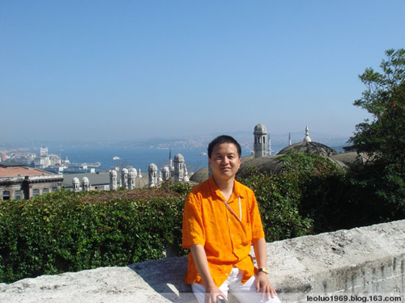
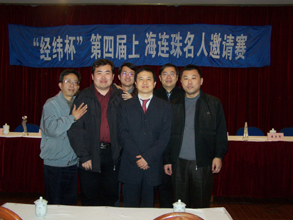

罗锦伟在土耳其游览留影
有这么一群人，十几年间，用自己的青春和智慧，热情和心血，将中国五子棋项目从无到有地做到现在这样一个颇成气候的局面，其中比较著名的既是组织者又是棋手同时也是出资人的当数圈内人士经常说到的“南罗北那”。
“北那”即那威，“南罗”则是罗锦伟。从五子圈外的影响力来讲，知道那威的远比知道罗锦伟的人要多得多。不过实际上罗锦伟为五子棋所做的并不少，这两位也是中国五子棋两大重镇上海和北京的关键人物。

罗锦伟（中）在上海名人邀请赛上
作为上海五子棋委员会负责人之一、中华连珠网理事长的罗锦伟一直很低调，甚至于出了上海市外的五子棋爱好者对他了解不多。但如果我们说到这些年上海的“团结杯”、“南北十强争霸赛”、“上海高校邀请赛”、“北京高校邀请赛”以及影响巨大的“上海名人邀请赛”等等，几乎全是他一人赞助举办的，那我们的印象或许就深刻了不少。
低调或张扬，对于一个新兴项目而言可能都是需要的，而在交流中，我感觉罗锦伟的低调并不只是个性原因。他提到做五子的“回报”这个话题，“有很多人刚做的时候，就盼望有回报。我就是担心别人(对我)有这样的认为”；另外一个因素，大概他觉得低调有利于圈内的团结互助，有利于棋界的稳定。甚至他还说出了颇为强势的一段话：“我是很不喜欢在棋中参杂名利的。我自己不能够，别人我也会努力控制，并保持上海棋界的稳定”。
或许罗锦伟个性上并不是个低调的人，在轻松的聊天气氛中，他还“自吹”上了一句“在中国的连珠界我自认为是除老那之外最重要的人物”，并称“我是惟一在连珠界投资较大，但从不求回报的”。看来低调跟活泼并不矛盾，因为之前跟罗锦伟并不太熟悉，这几句一聊，对他的印象生动不少，也深刻了不少。
可能过几年后我们对他的印象会越来越深，因为罗锦伟透露说，他准备把上海名人邀请赛改为两年一届，在世界个人赛的空年，邀请世界上最强的、表现最好的选手参加，“以最好的比赛条件来做世界上最好的比赛”。
罗锦伟把这称为“爱棋的计划”，他的“一步不拉的爱棋计划”里还准备“在这一两年给上海连珠安一个家，上海也该有一个固定的家了”。
虽然也感慨这十年过得飞快，开玩笑说“十年前很多人都还是单身，现在孩子也大了；十年前很多人没结婚的，现在已经离婚多时了”，“十年前我是青年，现在已经是中年了。我已经四十了，从而立走向了不惑”，但罗锦伟还是在不疾不徐的安排着他的事业、他的人生、以及他的五子棋计划。
“五子棋其实在世界上还是一个比较小的棋种，从棋的本身来说还在不断地完善。从现在的情况看，各国在组织和技术上互相还有很多的差距。今后在组织建设和整合上都还有很多的路要走。五子棋在世界范围内各国发展还很不平衡，所以建立一个统一的强大的国际组织很是必要。我感觉现在的架构有点弱。”
“中国的部分现在要推进组织间的协同发展，要发展就需要在组织间建立互信和互助，现在这些都还欠缺。这需要各组织之间、组织者之间能够不为名利地走到一起。这也需要时间。我不赞成吞并，上海也从来没有过合并任何域外组织的打算和事实，我们做好我们的部分。任何地区都有管理上的特殊性，但我也希望各组织能够以平等的姿态联合起来。成立一个全国性的、能够代表中国各组织的一个机构。但这并不等同于国家的机构，可能我的想法有点偏…”
“其实五子棋的发展一直是由民间在主推。并且，随着市场经济的推进，最终五子棋将走向市场，不管你愿不愿意，将来会发展成为真正的社团组织。而各地区将以俱乐部的形式来加入，有点象现在的足球，在北京和上海已经有了这样的征兆了。随着时间的推移，其他地区也会跟上的。上海和北京已经有较为明显的可以组建俱乐部的基础。将来或许会有更多的组织型的俱乐部存在，然后会以俱乐部的形态进行整合。”
“只是这种形态的成熟与完善需要时间，是没有办法速成的，是棋发展到一定阶段的产物。发展是需要时间的，不是有个名人说‘前进每一步，都有新高度’么？上海将会很扎实地走下去。”
这些是罗锦伟对于国际、国内和本地五子棋现状和发展趋势的一个整体看法，透彻而又不失乐观，至少他对五子棋本身以及上海五子棋的前景是乐观的，这份乐观中也融入了他的坚决，“我希望能给大家更大的信心，我在上海也经常这样。不用怕，上海的棋界有我在。”、“一般每年都赞助不少吧(指赞助赛事)，以后还会再投。”
上海模式
“上海五子棋组织的特别之处在于我们可能是中国惟一的集体领导的团体。每两年改选一次负责人班子，任何人都只能是其中的一个，没有特殊化。”
“小顾(顾炜)现在负责上海的日常事务，对协会工作负总责，打个比方，他是我们